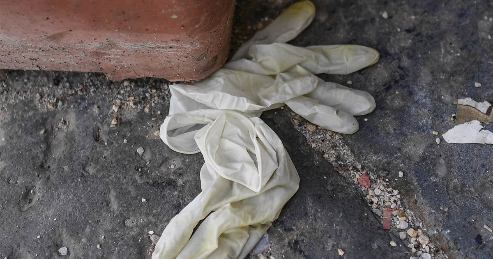
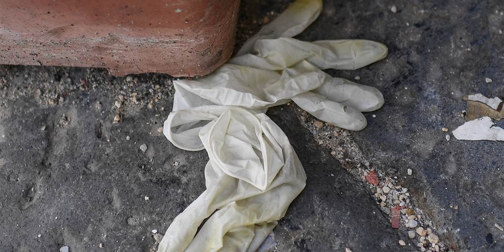
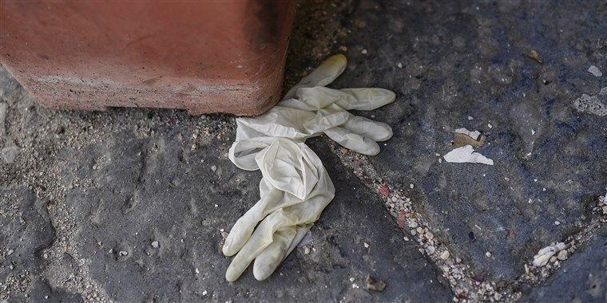
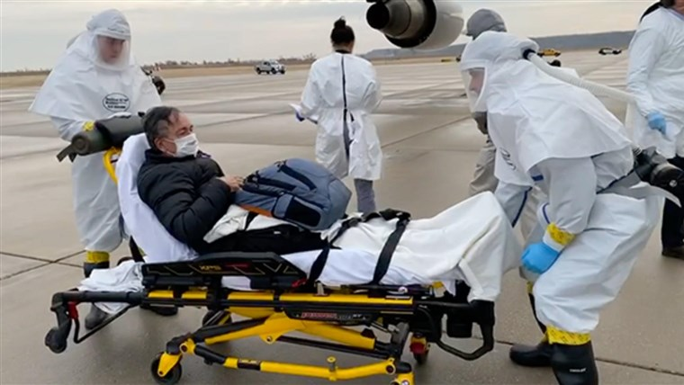

Disposable gloves won't prevent you from catching the coronavirus — here's why
NAPLES, CAMPANIA, ITALY - 2020/05/06: Worn-out protection gloves lie thrown away on the street, in Naples city.(Photo by Salvatore Laporta/KONTROLAB/LightRocket via Getty Images)Salvatore Laporta / Getty Images
As states reopen and people spend more time outside in the warm weather, experts are still encouraging precautions to reduce spread of the coronavirus.Face masks and social distancing are the strategies touted most often, but many people also choose to wear gloves.
But are gloves necessary?
Experts are quick to say no, and the Centers for Disease Control and Prevention explicitly say not to wear gloves when running errands.Situations where gloves are recommended, per the CDC, are when you're cleaning or caring for someone who's sick.
Instead, when you're out in public, the CDC encourages maintaining 6 feet from other people, wearing a mask and practicing good hand hygiene.This means washing your hands with soap and water for 20 seconds or using a hand sanitizer with at least 60% alcohol.
May 19, 202002:24
The logic behind discouraging glove use, according to Dr. Amesh Adalja, a senior scholar at the Johns Hopkins Center for Health Security in Baltimore, Maryland, is that they don't 'do anything but give people a false sense of security, waste time and create more demand for something that's unnecessary,' he told TODAY.
While disposable gloves are frequently worn in medical settings, they won't be as effective in day-to-day life.
'Latex gloves can rip very easily,' said Adalja.'They're not designed for going out, running up stairs, doing things in daily life.They're not very durable when it comes to pumping gas or anything ...They're going to get holes.They're not meant for wearing during activities and daily living.Even as a physician, I have my gloves rip all the time.'
Aline Holmes, a registered nurse based in New Jersey who has worked with hospitals and health care providers during infectious disease outbreaks, said that latex-free nitrile gloves are worn to care for patients in isolation.But since the coronavirus is primarily spread through respiratory droplets and not from touching surfaces, it's unlikely that gloves would do much to protect wearers.
'When you sneeze or cough, mucus and water droplets come out of your nose and mouth and travel,' she explained.'Those droplets go about 4 or 5 feet and then drop to the ground.Wearing gloves isn't necessarily going to do anything ...Eventually, you'll take those gloves off.'
Nondisposable or winter gloves carry the same risks, according to Holmes.
'Winter gloves are effective until you touch your face, eyes, nose while wearing them, or are not careful when taking them off so that you touch the outside of the glove where the droplets are,' Holmes said.
'You would still have to wash your hands after taking them off just to make sure you don't touch the outside of the glove, and also be careful with what you do with them when you take them off,' she continued.'If you lay them down on a table there is the possibility you can transfer the droplets with the virus to that surface or to anyone who touches the gloves or the surface.'
Adalja pointed out that people will likely still touch their faces while wearing the gloves.
'They need to wash their hands and not touch their face,' he said.'Many people are still going to touch their face with the glove, which is actually probably worse.'
Both medical professionals said the best thing to do is keep hands clean, preferably by washing them for at least 20 seconds at a time.Holmes said that hand sanitizer can help, but soap and water removes droplets more effectively.People should also avoid touching their faces, especially their eyes, noses and mouths.
March 10, 202004:40
Both Adalja and Holmes said that if people stock up on gloves, that could lead to shortages for health care professionals and those who actually need the supplies.Similar shortages already exist with hospital-grade masks, hand sanitizer and some cleaning products.
Holmes emphasized trying to maintain social distancing, especially from those who appear to be ill, and avoiding touching surfaces in public as much as possible.If you're riding mass transit, she recommends using a tissue or paper towel to grab surfaces so you're not touching them directly.
Posted On: 2020-03-10T19:16:00




Content Date: 2020-03-10
Download Date: 2021-05-13
Document ID: L0C04BZ9Y